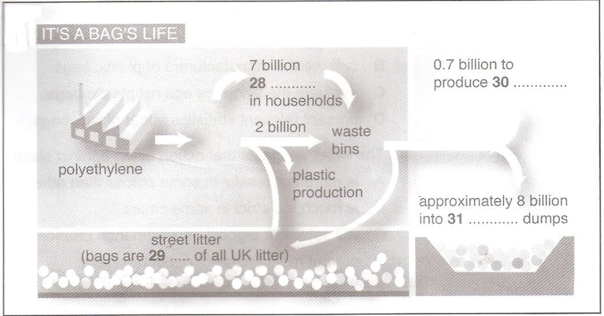

Look at the information about lighting.
Complete the sentences below with words taken from the passage.
Write NO MORE THAN THREE WORDS for each answer.
Write your answers in boxes 1-7 on your answer sheet.
Do the following statements agree with the information given in the extract
above?
In boxes 8-13 on your answer sheet write:
TRUE if the statement agrees with the information
FALSE if the statement contradicts the
information
NOT GIVEN if there is no information on this.
Look at the information on five computer courses.
For which course are the following statements true?
Write the correct letter A-E in boxes 14-20 on your answer sheet.
NB You may use any letter more than once.
Look at the information about enrolling for adult courses.
Complete the sentences below with words taken from the passage.
Write NO MORE THAN THREE WORDS for each answer.
Write your answers in boxes 21-27 on your answer sheet.
Label the diagram below.
Choose ONE WORD OR A NUMBER from the passage for each answer.
Write your answers in boxes 28-31 on your answer

Look at the following situations and the list of places (A-E) below.
Match each situation with the place it relates to.
Write the correct letter A-E in boxes 32-38 on your answer sheet.
You may use the letter more than once.
Choose the correct letter, A, B, C or D. Write your answers in boxes 39 and 40 on your answer sheet.
In the first part of this passage, the main aim of the writer is to
The writer suggests that action taken against plastic bags